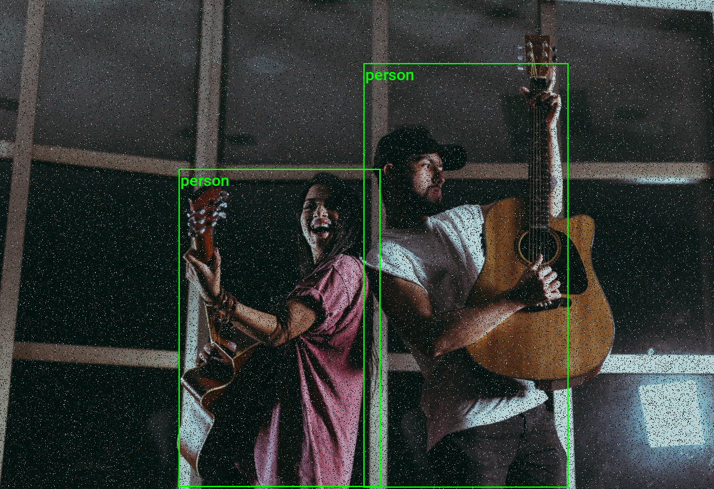
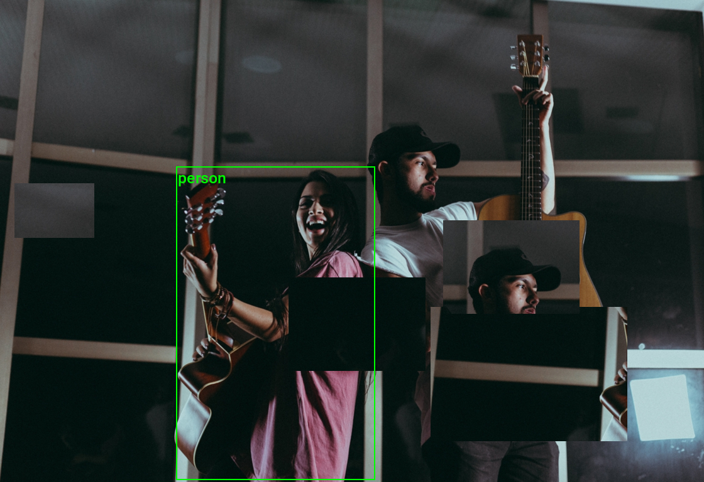
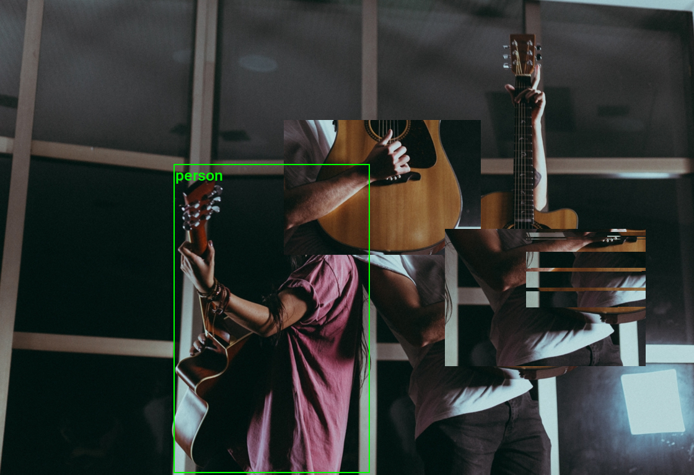

How to Create Custom Torchvision V2 Transforms
- Introduction
- Getting Started with the Code
- Setting Up Your Python Environment
- Importing the Required Dependencies
- Loading and Exploring the Dataset
- Examining the Transforms V2 Class
- Creating a Random Pixel Copy Transform
- Creating a Random Patch Copy Transform
- Conclusion
Introduction
Welcome to this hands-on guide to creating custom V2 transforms in torchvision. Torchvision’s V2 image transforms support annotations for various tasks, such as bounding boxes for object detection and segmentation masks for image segmentation.
The tutorial walks through setting up a Python environment, loading the raw annotations into a Pandas DataFrame, and creating custom data augmentations that support bounding box annotations.
Data augmentation is a technique that creates variations of existing training samples to prevent a model from seeing the same sample twice. The goal is to help the model learn general features versus memorizing specific examples.
This guide is suitable for beginners and experienced practitioners, providing the code, explanations, and resources needed to understand and implement each step. Upon completion, you will have a solid foundation for creating custom V2 image transforms in torchvision for object detection tasks.
Getting Started with the Code
The tutorial code is available as a Jupyter Notebook, which you can run locally or in a cloud-based environment like Google Colab. I have dedicated tutorials for those new to these platforms or who need guidance setting up:
| Jupyter Notebook: | GitHub Repository | Open In Colab |
|---|---|---|
Setting Up Your Python Environment
Before diving into the code, we’ll cover the steps to create a local Python environment and install the necessary dependencies.
Creating a Python Environment
First, we’ll create a Python environment using Conda/Mamba. Open a terminal with Conda/Mamba installed and run the following commands:
# Create a new Python 3.11 environment
conda create --name pytorch-env python=3.11 -y
# Activate the environment
conda activate pytorch-env# Create a new Python 3.11 environment
mamba create --name pytorch-env python=3.11 -y
# Activate the environment
mamba activate pytorch-envInstalling PyTorch
Next, we’ll install PyTorch. Run the appropriate command for your hardware and operating system.
# Install PyTorch with CUDA
pip install torch torchvision torchaudio --index-url https://download.pytorch.org/whl/cu121# MPS (Metal Performance Shaders) acceleration is available on MacOS 12.3+
pip install torch torchvision torchaudio# Install PyTorch for CPU only
pip install torch torchvision torchaudio --index-url https://download.pytorch.org/whl/cpu# Install PyTorch for CPU only
pip install torch torchvision torchaudioInstalling Additional Libraries
We also need to install some additional libraries for our project.
| Package | Description |
|---|---|
jupyter |
An open-source web application that allows you to create and share documents that contain live code, equations, visualizations, and narrative text. (link) |
matplotlib |
This package provides a comprehensive collection of visualization tools to create high-quality plots, charts, and graphs for data exploration and presentation. (link) |
pandas |
This package provides fast, powerful, and flexible data analysis and manipulation tools. (link) |
pillow |
The Python Imaging Library adds image processing capabilities. (link) |
tqdm |
A Python library that provides fast, extensible progress bars for loops and other iterable objects in Python. (link) |
distinctipy |
A lightweight python package providing functions to generate colours that are visually distinct from one another. (link) |
Run the following commands to install these additional libraries:
# Install additional dependencies
pip install distinctipy jupyter matplotlib pandas pillow tqdmInstalling Utility Packages
We will also install some utility packages I made, which provide shortcuts for routine tasks.
Run the following commands to install the utility packages:
# Install additional utility packages
pip install cjm_pil_utils cjm_psl_utils cjm_pytorch_utilsWith our environment set up, we can open our Jupyter Notebook and dive into the code.
Importing the Required Dependencies
First, we will import the necessary Python packages into our Jupyter Notebook.
# Import Python Standard Library dependencies
from functools import partial
from pathlib import Path
from typing import Any, Dict, Optional, List, Tuple, Union
import random
from functools import singledispatchmethod
# Import utility functions
from cjm_pil_utils.core import get_img_files
from cjm_psl_utils.core import download_file, file_extract
from cjm_pytorch_utils.core import tensor_to_pil
# Import the distinctipy module
from distinctipy import distinctipy
# Import matplotlib for creating plots
import matplotlib.pyplot as plt
# Import numpy
import numpy as np
# Import the pandas package
import pandas as pd
# Do not truncate the contents of cells and display all rows and columns
pd.set_option('max_colwidth', None, 'display.max_rows', None, 'display.max_columns', None)
# Import PIL for image manipulation
from PIL import Image
# Import PyTorch dependencies
import torch
from torch.utils.data import Dataset, DataLoader
# Import torchvision dependencies
import torchvision
torchvision.disable_beta_transforms_warning()
from torchvision.tv_tensors import BoundingBoxes, Mask
from torchvision import tv_tensors
from torchvision.tv_tensors import wrap as tv_wrap
from torchvision.utils import draw_bounding_boxes
import torchvision.transforms.v2 as transforms
# Import tqdm for progress bar
from tqdm.auto import tqdmAfter importing the dependencies, we can load our dataset.
Loading and Exploring the Dataset
We will use the following toy dataset containing images from the free stock photo site Pexels and its bounding box annotations:
- Dataset Repository: labelme-bounding-box-toy-dataset
The bounding boxes for this dataset use the LabelMe annotation format. You can learn more about this format and how to work with such annotations in the tutorial linked below:
Setting the Directory Paths
We first need to specify a place to store our dataset and a location to download the zip file containing it. The following code creates the folders in the current directory (./). Update the path if that is not suitable for you.
# Define path to store datasets
dataset_dir = Path("./Datasets/")
# Create the dataset directory if it does not exist
dataset_dir.mkdir(parents=True, exist_ok=True)
# Define path to store archive files
archive_dir = dataset_dir/'../Archive'
# Create the archive directory if it does not exist
archive_dir.mkdir(parents=True, exist_ok=True)
# Creating a Series with the paths and converting it to a DataFrame for display
pd.Series({
"Dataset Directory:": dataset_dir,
"Archive Directory:": archive_dir
}).to_frame().style.hide(axis='columns')| Dataset Directory: | Datasets |
|---|---|
| Archive Directory: | Datasets/../Archive |
Setting the Dataset Path
Next, we construct the name for the Hugging Face Hub dataset and set where to download and extract the dataset.
# Set the name of the dataset
dataset_name = 'labelme-bounding-box-toy-dataset'
# Construct the HuggingFace Hub dataset name by combining the username and dataset name
hf_dataset = f'cj-mills/{dataset_name}'
# Create the path to the zip file that contains the dataset
archive_path = Path(f'{archive_dir}/{dataset_name}.zip')
# Create the path to the directory where the dataset will be extracted
dataset_path = Path(f'{dataset_dir}/{dataset_name}')
# Creating a Series with the dataset name and paths and converting it to a DataFrame for display
pd.Series({
"HuggingFace Dataset:": hf_dataset,
"Archive Path:": archive_path,
"Dataset Path:": dataset_path
}).to_frame().style.hide(axis='columns')| HuggingFace Dataset: | cj-mills/labelme-bounding-box-toy-dataset |
|---|---|
| Archive Path: | Datasets/../Archive/labelme-bounding-box-toy-dataset.zip |
| Dataset Path: | Datasets/labelme-bounding-box-toy-dataset |
Downloading the Dataset
We can now download the archive file and extract the dataset using the download_file and file_extract functions from the cjm_psl_utils package. We can delete the archive afterward to save space.
# Construct the HuggingFace Hub dataset URL
dataset_url = f"https://huggingface.co/datasets/{hf_dataset}/resolve/main/{dataset_name}.zip"
print(f"HuggingFace Dataset URL: {dataset_url}")
# Set whether to delete the archive file after extracting the dataset
delete_archive = True
# Download the dataset if not present
if dataset_path.is_dir():
print("Dataset folder already exists")
else:
print("Downloading dataset...")
download_file(dataset_url, archive_dir)
print("Extracting dataset...")
file_extract(fname=archive_path, dest=dataset_dir)
# Delete the archive if specified
if delete_archive: archive_path.unlink()Get Image File Paths
Next, we will make a dictionary that maps each image’s unique name to its file path, allowing us to retrieve the file path for a given image more efficiently.
# Get a list of image files in the dataset
img_file_paths = get_img_files(dataset_path)
# Create a dictionary that maps file names to file paths
img_dict = {file.stem : file for file in (img_file_paths)}
# Print the number of image files
print(f"Number of Images: {len(img_dict)}")
# Display the first five entries from the dictionary using a Pandas DataFrame
pd.DataFrame.from_dict(img_dict, orient='index').head()Number of Images: 28| 0 | |
|---|---|
| adults-attractive-beautiful-1727660 | Datasets/labelme-bounding-box-toy-dataset/adults-attractive-beautiful-1727660.jpg |
| balloon-launch-festival-flame-1426050 | Datasets/labelme-bounding-box-toy-dataset/balloon-launch-festival-flame-1426050.jpg |
| bar-beer-celebration-3009788 | Datasets/labelme-bounding-box-toy-dataset/bar-beer-celebration-3009788.jpg |
| beach-child-daughter-1438511 | Datasets/labelme-bounding-box-toy-dataset/beach-child-daughter-1438511.jpg |
| cellphone-festival-girl-1408983 | Datasets/labelme-bounding-box-toy-dataset/cellphone-festival-girl-1408983.jpg |
Get Image Annotations
We will then read the content of the JSON annotation file associated with each image into a single Pandas DataFrame so we can easily query the annotations.
# Get a list of JSON files in the dataset
annotation_file_paths = list(dataset_path.glob('*.json'))
# Create a generator that yields Pandas DataFrames containing the data from each JSON file
cls_dataframes = (pd.read_json(f, orient='index').transpose() for f in tqdm(annotation_file_paths))
# Concatenate the DataFrames into a single DataFrame
annotation_df = pd.concat(cls_dataframes, ignore_index=False)
# Assign the image file name as the index for each row
annotation_df['index'] = annotation_df.apply(lambda row: row['imagePath'].split('.')[0], axis=1)
annotation_df = annotation_df.set_index('index')
# Keep only the rows that correspond to the filenames in the 'img_dict' dictionary
annotation_df = annotation_df.loc[list(img_dict.keys())]
# Print the first 5 rows of the DataFrame
annotation_df.head()| version | flags | shapes | imagePath | imageData | imageHeight | imageWidth | |
|---|---|---|---|---|---|---|---|
| index | |||||||
| adults-attractive-beautiful-1727660 | 5.3.1 | {} | [{‘label’: ‘person’, ‘points’: [[450.1688537597656, 174.04931640625], [925.5413818359375, 765.6500244140625]], ‘group_id’: None, ‘description’: ’‘, ’shape_type’: ‘rectangle’, ‘flags’: {}}, {‘label’: ‘person’, ‘points’: [[1.195121951219533, 169.67073170731703], [448.7560975609756, 766.6219512195121]], ‘group_id’: None, ‘description’: ’‘, ’shape_type’: ‘rectangle’, ‘flags’: {}}] | adults-attractive-beautiful-1727660.jpg | None | 768 | 928 |
| balloon-launch-festival-flame-1426050 | 5.3.1 | {} | [{‘label’: ‘person’, ‘points’: [[740.9563598632812, 368.4273681640625], [1088.41552734375, 764.3656005859375]], ‘group_id’: None, ‘description’: ’‘, ’shape_type’: ‘rectangle’, ‘flags’: {}}] | balloon-launch-festival-flame-1426050.jpg | None | 768 | 1152 |
| bar-beer-celebration-3009788 | 5.3.1 | {} | [{‘label’: ‘person’, ‘points’: [[670.41650390625, 147.376953125], [1088.8197021484375, 760.0108642578125]], ‘group_id’: None, ‘description’: ’‘, ’shape_type’: ‘rectangle’, ‘flags’: {}}, {‘label’: ‘person’, ‘points’: [[116.53658536585372, 207.47560975609753], [629.3414634146342, 766.6219512195121]], ‘group_id’: None, ‘description’: ’‘, ’shape_type’: ‘rectangle’, ‘flags’: {}}, {‘label’: ‘person’, ‘points’: [[250.68292682926835, 1.378048780487799], [455.5609756097561, 225.15853658536582]], ‘group_id’: None, ‘description’: ’‘, ’shape_type’: ‘rectangle’, ‘flags’: {}}, {‘label’: ‘person’, ‘points’: [[427.51219512195127, 2.59756097560975], [593.9756097560976, 219.67073170731703]], ‘group_id’: None, ‘description’: ’‘, ’shape_type’: ‘rectangle’, ‘flags’: {}}, {‘label’: ‘person’, ‘points’: [[647.6341463414634, 2.59756097560975], [817.7560975609756, 137.96341463414632]], ‘group_id’: None, ‘description’: ’‘, ’shape_type’: ‘rectangle’, ‘flags’: {}}, {‘label’: ‘person’, ‘points’: [[731.170731707317, 0.7682926829268231], [917.1463414634146, 221.49999999999997]], ‘group_id’: None, ‘description’: ’‘, ’shape_type’: ‘rectangle’, ‘flags’: {}}, {‘label’: ‘person’, ‘points’: [[1009.2195121951219, 19.670731707317067], [1116.5365853658536, 262.3536585365854]], ‘group_id’: None, ‘description’: ’‘, ’shape_type’: ‘rectangle’, ‘flags’: {}}] | bar-beer-celebration-3009788.jpg | None | 768 | 1216 |
| beach-child-daughter-1438511 | 5.3.1 | {} | [{‘label’: ‘person’, ‘points’: [[393.214111328125, 317.10064697265625], [588.5502319335938, 723.3473510742188]], ‘group_id’: None, ‘description’: ’‘, ’shape_type’: ‘rectangle’, ‘flags’: {}}, {‘label’: ‘person’, ‘points’: [[578.9024390243902, 351.3780487804878], [692.9268292682926, 697.1097560975609]], ‘group_id’: None, ‘description’: ’‘, ’shape_type’: ‘rectangle’, ‘flags’: {}}] | beach-child-daughter-1438511.jpg | None | 768 | 1120 |
| cellphone-festival-girl-1408983 | 5.3.1 | {} | [{‘label’: ‘person’, ‘points’: [[119.5823974609375, 97.06643676757812], [886.0499877929688, 763.5545654296875]], ‘group_id’: None, ‘description’: ’‘, ’shape_type’: ‘rectangle’, ‘flags’: {}}] | cellphone-festival-girl-1408983.jpg | None | 768 | 1152 |
Visualizing Image Annotations
In this section, we will annotate a single image with its bounding boxes using torchvision’s BoundingBoxes class and draw_bounding_boxes function.
Get image classes
First, we get the names of all the classes in our dataset.
# Explode the 'shapes' column in the annotation_df dataframe
# Convert the resulting series to a dataframe and rename the 'shapes' column to 'shapes'
# Apply the pandas Series function to the 'shapes' column of the dataframe
shapes_df = annotation_df['shapes'].explode().to_frame().shapes.apply(pd.Series)
# Get a list of unique labels in the 'annotation_df' DataFrame
class_names = shapes_df['label'].unique().tolist()
# Display labels using a Pandas DataFrame
pd.DataFrame(class_names)| 0 | |
|---|---|
| 0 | person |
Generate a color map
Next, we will generate a color map for the object classes.
# Generate a list of colors with a length equal to the number of labels
colors = distinctipy.get_colors(len(class_names))
# Make a copy of the color map in integer format
int_colors = [tuple(int(c*255) for c in color) for color in colors]
# Generate a color swatch to visualize the color map
distinctipy.color_swatch(colors)Download a font file
The draw_bounding_boxes function included with torchvision uses a pretty small font size. We can increase the font size if we use a custom font. Font files are available on sites like Google Fonts, or we can use one included with the operating system.
# Set the name of the font file
font_file = 'KFOlCnqEu92Fr1MmEU9vAw.ttf'
# Download the font file
download_file(f"https://fonts.gstatic.com/s/roboto/v30/{font_file}", "./")Define the bounding box annotation function
We can make a partial function using draw_bounding_boxes since we’ll use the same box thickness and font each time we visualize bounding boxes.
draw_bboxes = partial(draw_bounding_boxes, fill=False, width=2, font=font_file, font_size=25)Annotate sample image
Finally, we will open a sample image and annotate it with it’s associated bounding boxes.
# Get the file ID of the first image file
file_id = list(img_dict.keys())[19]
# Open the associated image file as a RGB image
sample_img = Image.open(img_dict[file_id]).convert('RGB')
# Extract the labels and bounding box annotations for the sample image
labels = [shape['label'] for shape in annotation_df.loc[file_id]['shapes']]
bboxes = np.array([shape['points'] for shape in annotation_df.loc[file_id]['shapes']], dtype=np.float32).reshape(len(labels),4)
# Annotate the sample image with labels and bounding boxes
annotated_tensor = draw_bboxes(
image=transforms.PILToTensor()(sample_img),
boxes=BoundingBoxes(torchvision.ops.box_convert(torch.Tensor(bboxes), 'xyxy', 'xyxy'), format='xyxy', canvas_size=sample_img.size[::-1]),
labels=labels,
colors=[int_colors[i] for i in [class_names.index(label) for label in labels]]
)
tensor_to_pil(annotated_tensor)We have loaded the dataset and visualized the annotations for a sample image. In the next section, we will explore the V2 Transforms class.
Examining the Transforms V2 Class
Our custom transforms will inherit from the transforms.v2.Transform class, so let’s look at the source code for that class first.
class Transform(nn.Module):
# Class attribute defining transformed types. Other types are passed-through without any transformation
# We support both Types and callables that are able to do further checks on the type of the input.
_transformed_types: Tuple[Union[Type, Callable[[Any], bool]], ...] = (torch.Tensor, PIL.Image.Image)
def __init__(self) -> None:
super().__init__()
_log_api_usage_once(self)
def _check_inputs(self, flat_inputs: List[Any]) -> None:
pass
def _get_params(self, flat_inputs: List[Any]) -> Dict[str, Any]:
return dict()
def _call_kernel(self, functional: Callable, inpt: Any, *args: Any, **kwargs: Any) -> Any:
kernel = _get_kernel(functional, type(inpt), allow_passthrough=True)
return kernel(inpt, *args, **kwargs)
def _transform(self, inpt: Any, params: Dict[str, Any]) -> Any:
raise NotImplementedError
def forward(self, *inputs: Any) -> Any:
flat_inputs, spec = tree_flatten(inputs if len(inputs) > 1 else inputs[0])
self._check_inputs(flat_inputs)
needs_transform_list = self._needs_transform_list(flat_inputs)
params = self._get_params(
[inpt for (inpt, needs_transform) in zip(flat_inputs, needs_transform_list) if needs_transform]
)
flat_outputs = [
self._transform(inpt, params) if needs_transform else inpt
for (inpt, needs_transform) in zip(flat_inputs, needs_transform_list)
]
return tree_unflatten(flat_outputs, spec)
def _needs_transform_list(self, flat_inputs: List[Any]) -> List[bool]:
# Below is a heuristic on how to deal with pure tensor inputs:
# 1. Pure tensors, i.e. tensors that are not a tv_tensor, are passed through if there is an explicit image
# (`tv_tensors.Image` or `PIL.Image.Image`) or video (`tv_tensors.Video`) in the sample.
# 2. If there is no explicit image or video in the sample, only the first encountered pure tensor is
# transformed as image, while the rest is passed through. The order is defined by the returned `flat_inputs`
# of `tree_flatten`, which recurses depth-first through the input.
#
# This heuristic stems from two requirements:
# 1. We need to keep BC for single input pure tensors and treat them as images.
# 2. We don't want to treat all pure tensors as images, because some datasets like `CelebA` or `Widerface`
# return supplemental numerical data as tensors that cannot be transformed as images.
#
# The heuristic should work well for most people in practice. The only case where it doesn't is if someone
# tries to transform multiple pure tensors at the same time, expecting them all to be treated as images.
# However, this case wasn't supported by transforms v1 either, so there is no BC concern.
needs_transform_list = []
transform_pure_tensor = not has_any(flat_inputs, tv_tensors.Image, tv_tensors.Video, PIL.Image.Image)
for inpt in flat_inputs:
needs_transform = True
if not check_type(inpt, self._transformed_types):
needs_transform = False
elif is_pure_tensor(inpt):
if transform_pure_tensor:
transform_pure_tensor = False
else:
needs_transform = False
needs_transform_list.append(needs_transform)
return needs_transform_list
def extra_repr(self) -> str:
extra = []
for name, value in self.__dict__.items():
if name.startswith("_") or name == "training":
continue
if not isinstance(value, (bool, int, float, str, tuple, list, enum.Enum)):
continue
extra.append(f"{name}={value}")
return ", ".join(extra)
# This attribute should be set on all transforms that have a v1 equivalent. Doing so enables two things:
# 1. In case the v1 transform has a static `get_params` method, it will also be available under the same name on
# the v2 transform. See `__init_subclass__` for details.
# 2. The v2 transform will be JIT scriptable. See `_extract_params_for_v1_transform` and `__prepare_scriptable__`
# for details.
_v1_transform_cls: Optional[Type[nn.Module]] = None
def __init_subclass__(cls) -> None:
# Since `get_params` is a `@staticmethod`, we have to bind it to the class itself rather than to an instance.
# This method is called after subclassing has happened, i.e. `cls` is the subclass, e.g. `Resize`.
if cls._v1_transform_cls is not None and hasattr(cls._v1_transform_cls, "get_params"):
cls.get_params = staticmethod(cls._v1_transform_cls.get_params) # type: ignore[attr-defined]
def _extract_params_for_v1_transform(self) -> Dict[str, Any]:
# This method is called by `__prepare_scriptable__` to instantiate the equivalent v1 transform from the current
# v2 transform instance. It extracts all available public attributes that are specific to that transform and
# not `nn.Module` in general.
# Overwrite this method on the v2 transform class if the above is not sufficient. For example, this might happen
# if the v2 transform introduced new parameters that are not support by the v1 transform.
common_attrs = nn.Module().__dict__.keys()
return {
attr: value
for attr, value in self.__dict__.items()
if not attr.startswith("_") and attr not in common_attrs
}
def __prepare_scriptable__(self) -> nn.Module:
# This method is called early on when `torch.jit.script`'ing an `nn.Module` instance. If it succeeds, the return
# value is used for scripting over the original object that should have been scripted. Since the v1 transforms
# are JIT scriptable, and we made sure that for single image inputs v1 and v2 are equivalent, we just return the
# equivalent v1 transform here. This of course only makes transforms v2 JIT scriptable as long as transforms v1
# is around.
if self._v1_transform_cls is None:
raise RuntimeError(
f"Transform {type(self).__name__} cannot be JIT scripted. "
"torchscript is only supported for backward compatibility with transforms "
"which are already in torchvision.transforms. "
"For torchscript support (on tensors only), you can use the functional API instead."
)
return self._v1_transform_cls(**self._extract_params_for_v1_transform())The above source code indicates that our custom transforms must implement the _transform method, which handles images and annotations.
Creating a Random Pixel Copy Transform
Our first custom transform will randomly copy and paste pixels in random locations. This one will not require updating the associated image annotations.
Define the Custom Transform Class
We can use Python’s singledispatchmethod decorator to overload the _transform method based on the first (non-self or non-cls) argument’s type.
We will implement different versions to handle PIL Images, PyTorch Tensors, and torchvision’s tv_tensor.Image class as image input types and to return annotations such as BoundingBoxes and Mask instances unaltered.
class RandomPixelCopy(transforms.Transform):
"""
A torchvision V2 transform that copies data from a randomly selected set of pixels to another
randomly selected set of pixels of a image tensor.
"""
def __init__(self,
min_pct=0.0025, # The minimum percentage of the tensor's pixels to be copied.
max_pct:float=0.1 # The maximum percentage of the tensor's pixels to be copied.
):
super().__init__()
self.min_pct = min_pct
self.max_pct = max_pct
def rand_pixel_copy(self,
img_tensor:torch.Tensor, # The input image tensor.
pct:float # The percentage of the total number of pixels to be selected as the source and target sets of pixels.
) -> torch.Tensor : # The modified input image tensor.
"""
Copy data from a randomly selected set of pixels to another randomly selected set of pixels of a image tensor.
"""
src_dim = img_tensor.dim()
img_tensor = img_tensor.unsqueeze(0) if src_dim == 3 else img_tensor
# Get the shape of the img_tensor
b, c, h, w = img_tensor.shape
# Calculate the number of pixels to be selected
num_pixels = int(img_tensor[-1:].numel() * pct)
# Select the source pixel indices
source_indices = torch.LongTensor(num_pixels, 2).random_(0, h * w)
source_indices[:, 0] = source_indices[:, 0] // w
source_indices[:, 1] = source_indices[:, 1] % w
# Select the target pixel indices
target_indices = torch.LongTensor(num_pixels, 2).random_(0, h * w)
target_indices[:, 0] = target_indices[:, 0] // w
target_indices[:, 1] = target_indices[:, 1] % w
# Get the indices of the channels
c_indices = torch.arange(c).repeat(num_pixels, 1).t()
# Copy the pixels
source_pixels = img_tensor[:, c_indices, source_indices[:, 0], source_indices[:, 1]]
img_tensor[:, c_indices, target_indices[:, 0], target_indices[:, 1]] = source_pixels
return img_tensor.squeeze(0) if src_dim == 3 else img_tensor
@singledispatchmethod
def _transform(self, inpt: Any, params: Dict[str, Any]) -> Any:
"""Default Behavior: Don't modify the input"""
return inpt
@_transform.register(torch.Tensor)
@_transform.register(tv_tensors.Image)
def _(self, inpt: Union[torch.Tensor, tv_tensors.Image], params: Dict[str, Any]) -> Any:
"""Apply the `rand_pixel_copy` method to the input tensor"""
return self.rand_pixel_copy(inpt, max(self.min_pct, random.random() * self.max_pct))
@_transform.register(Image.Image)
def _(self, inpt: Image.Image, params: Dict[str, Any]) -> Any:
"""Convert the PIL Image to a torch.Tensor to apply the transform"""
inpt_torch = transforms.PILToTensor()(inpt)
return transforms.ToPILImage()(self._transform(inpt_torch, params))
@_transform.register(BoundingBoxes)
@_transform.register(Mask)
def _(self, inpt: Union[BoundingBoxes, Mask], params: Dict[str, Any]) -> Any:
"""Don't modify image annotations"""
return inptWith our custom transform defined, we can create an instance of it and try it out.
Initialize the Transform
# Create a RandomPixelCopy object
rand_pixel_copy_tfm = RandomPixelCopy(max_pct=0.05)Prepare the Annotation Targets
The V2 image transforms take an image and a targets dictionary as input. The dictionary contains the annotations and labels for the image.
# Prepare bounding box targets
targets = {
'boxes': BoundingBoxes(torch.Tensor(bboxes),
format='xyxy',
canvas_size=sample_img.size[::-1]),
'labels': torch.Tensor([class_names.index(label) for label in labels])
}Apply the Augmentation
Now, we can see how our sample image looks after applying the augmentation.
# Feed sample image and targets through the image transform
augmented_img, augmented_targets = rand_pixel_copy_tfm(sample_img, targets)
# Annotate the augmented image with updated labels and bounding boxes
annotated_tensor = draw_bboxes(
image=transforms.PILToTensor()(augmented_img),
boxes=augmented_targets['boxes'],
labels=[class_names[int(label.item())] for label in augmented_targets['labels']],
colors=[int_colors[int(i)] for i in augmented_targets['labels']]
)
# Display the augmented image
transforms.ToPILImage()(annotated_tensor)# Feed sample image and targets through the image transform
augmented_img, augmented_targets = rand_pixel_copy_tfm(transforms.PILToTensor()(sample_img), targets)
# Annotate the augmented image with updated labels and bounding boxes
annotated_tensor = draw_bboxes(
image=augmented_img,
boxes=augmented_targets['boxes'],
labels=[class_names[int(label.item())] for label in augmented_targets['labels']],
colors=[int_colors[int(i)] for i in augmented_targets['labels']]
)
# Display the augmented image
transforms.ToPILImage()(annotated_tensor)
# Feed sample image and targets through the image transform
augmented_img, augmented_targets = rand_pixel_copy_tfm(transforms.ToImage()(sample_img), targets)
# Annotate the augmented image with updated labels and bounding boxes
annotated_tensor = draw_bboxes(
image=augmented_img,
boxes=augmented_targets['boxes'],
labels=[class_names[int(label.item())] for label in augmented_targets['labels']],
colors=[int_colors[int(i)] for i in augmented_targets['labels']]
)
# Display the augmented image
transforms.ToPILImage()(annotated_tensor)As intended, the transform randomly copy-pasted pixel values while leaving the bounding box annotations unchanged. In the next section, we will create a transform that requires us to update the bounding box annotations with the image.
Creating a Random Patch Copy Transform
Our second transform will randomly copy rectangular patches from the image and paste them in random locations. This transform may potentially occlude annotated areas, so we need to manage the associated bounding box annotations accordingly.
Define the Custom Transform Class
To determine if any copy-pasted patches occlude an annotated area, we will keep track of the patches for the current image and check how much they overlap with the bounding box annotations.
If the patches overlap a given bounding box by a certain threshold, we will set the dimensions for that bounding box to 0 so the SanitizeBoundingBoxes transform removes it. The SanitizeBoundingBoxes transform would also remove a segmentation mask associated with the bounding box.
class RandomPatchCopy(transforms.Transform):
"""
A torchvision V2 transform that copies data from a randomly selected rectangular patch
to another randomly selected rectangular region of an image tensor multiple times.
"""
def __init__(self,
pct:float=0.2, # The percentage of the tensor's size to be used as the side length of the square regions.
min_num:int=0, # The minimum number of times to apply the `rand_square_copy` function.
max_num:int=4, # The maximum number of times to apply the `rand_square_copy` function.
iou_thresh:float=0.25 # The IoU threshold for bounding box suppression.
):
super().__init__()
self.pct = pct
self.min_num = min_num
self.max_num = max_num
self.iou_thresh = iou_thresh
self.patches = []
def calculate_iou_multi(self,
boxes1:torch.Tensor, # An array of bounding boxes in [x1, y1, x2, y2] format.
boxes2:torch.Tensor # Another array of bounding boxes in [x1, y1, x2, y2] format.
) -> torch.Tensor: # A 2D array where element (i, j) is the IoU of boxes1[i] and boxes2[j].
"""
Calculate the Intersection over Union (IoU) for each combination of bounding boxes in two arrays
using PyTorch broadcasting.
"""
# Expand boxes1 and boxes2 for broadcasting
boxes1 = boxes1[:, None, :]
boxes2 = boxes2[None, :, :]
# Calculate intersection coordinates
int_x1 = torch.max(boxes1[..., 0], boxes2[..., 0])
int_y1 = torch.max(boxes1[..., 1], boxes2[..., 1])
int_x2 = torch.min(boxes1[..., 2], boxes2[..., 2])
int_y2 = torch.min(boxes1[..., 3], boxes2[..., 3])
# Calculate intersection and union areas
int_area = torch.clamp(int_x2 - int_x1, min=0) * torch.clamp(int_y2 - int_y1, min=0)
box1_area = (boxes1[..., 2] - boxes1[..., 0]) * (boxes1[..., 3] - boxes1[..., 1])
box2_area = (boxes2[..., 2] - boxes2[..., 0]) * (boxes2[..., 3] - boxes2[..., 1])
union_area = box1_area + box2_area - int_area
# Calculate IoU
iou = int_area / torch.clamp(union_area, min=1e-10)
return iou
def rand_patch_copy(self,
img_tensor:torch.Tensor, # The input image tensor.
pct:float # # The percentage of the image tensor's size to be used as the side length of the patch.
) -> (torch.Tensor, tuple): # The modified input image tensor and coordinates of the target patch in the format [x, y, w, h].
"""
Copy data from a randomly selected rectangular patch to another randomly selected
rectangular region of an image tensor, and return the coordinates of the target patch.
Assumes the tensor is in 'channels-first' format.
"""
if not (0 < pct <= 1):
raise ValueError("pct must be between 0 and 1")
# Get the shape of the tensor
_, h, w = img_tensor.shape
# Calculate the size of the rectangle
szx = int(pct * w)
szy = int(pct * h)
# Calculate the top-left coordinate of the source rectangle
sty1 = random.randint(0, w - szx) # x-coordinate
stx1 = random.randint(0, h - szy) # y-coordinate
# Calculate the top-left coordinate of the target rectangle
sty2 = random.randint(0, w - szx) # x-coordinate
stx2 = random.randint(0, h - szy) # y-coordinate
# Copy the data from the source square to the target rectangle
img_tensor[:, stx2:stx2 + szy, sty2:sty2 + szx] = img_tensor[:, stx1:stx1 + szy, sty1:sty1 + szx]
# The coordinates of the target patch
target_patch_coords = [sty2, stx2, sty2 + szx, stx2 + szy]
return img_tensor, target_patch_coords
@singledispatchmethod
def _transform(self, inpt: Any, params: Dict[str, Any]) -> Any:
"""Default Behavior: Don't modify the input"""
return inpt
@_transform.register(torch.Tensor)
@_transform.register(tv_tensors.Image)
def _(self, inpt: Union[torch.Tensor, tv_tensors.Image], params: Dict[str, Any]) -> Any:
self.patches = []
"""Apply the `rand_square_copy` function to the input tensor multiple times"""
for i in range(random.randint(self.min_num, self.max_num)):
inpt, patch = self.rand_patch_copy(inpt, max(0.1,random.random()*self.pct))
self.patches.append(patch)
return inpt
@_transform.register(Image.Image)
def _(self, inpt: Image.Image, params: Dict[str, Any]) -> Any:
"""Convert the PIL Image to a torch.Tensor to apply the transform"""
inpt_torch = transforms.PILToTensor()(inpt)
return transforms.ToPILImage()(self._transform(inpt_torch, params))
@_transform.register(BoundingBoxes)
def _(self, inpt: BoundingBoxes, params: Dict[str, Any]) -> Any:
"""Update the bounding box annotations based on the list of patches"""
if len(self.patches) > 0:
iou_matrix = self.calculate_iou_multi(inpt, torch.tensor(self.patches, dtype=torch.float32))
# Sum the IoU values for each box in boxes1
cumulative_iou = torch.sum(iou_matrix, axis=1)
# Create a mask based on the cumulative IoU threshold
mask = cumulative_iou > self.iou_thresh
inpt_copy = torch.clone(inpt)
inpt_copy[mask] = 0
return tv_wrap(inpt_copy, like=inpt)
return inpt
@_transform.register(Mask)
def _(self, inpt: Mask, params: Dict[str, Any]) -> Any:
"""Don't modify segmentation annotations"""
return inptNow, let’s see how our sample image and its bounding box annotations look with this transform.
Initialize the Transform
# Create a RandomPatchCopy object
rand_patch_copy_tfm = RandomPatchCopy(pct=0.3, min_num=1, max_num=4)Apply the Augmentation
# Feed sample image and targets through the image transform
augmented_img, augmented_targets = rand_patch_copy_tfm(sample_img, targets)
# Remove degenerate/invalid bounding boxes and their corresponding labels and masks.
sanitized_img, sanitized_targets = transforms.SanitizeBoundingBoxes()(augmented_img, augmented_targets)
# Annotate the augmented image with updated labels and bounding boxes
annotated_tensor = draw_bboxes(
image=transforms.PILToTensor()(sanitized_img),
boxes=sanitized_targets['boxes'],
labels=[class_names[int(label.item())] for label in sanitized_targets['labels']],
colors=[int_colors[int(i)] for i in sanitized_targets['labels']]
)
# Display the augmented image
tensor_to_pil(annotated_tensor)
# Feed sample image and targets through the image transform
augmented_img, augmented_targets = rand_patch_copy_tfm(transforms.PILToTensor()(sample_img), targets)
# Remove degenerate/invalid bounding boxes and their corresponding labels and masks.
sanitized_img, sanitized_targets = transforms.SanitizeBoundingBoxes()(augmented_img, augmented_targets)
# Annotate the augmented image with updated labels and bounding boxes
annotated_tensor = draw_bboxes(
image=sanitized_img,
boxes=sanitized_targets['boxes'],
labels=[class_names[int(label.item())] for label in sanitized_targets['labels']],
colors=[int_colors[int(i)] for i in sanitized_targets['labels']]
)
# Display the augmented image
tensor_to_pil(annotated_tensor)
# Feed sample image and targets through the image transform
augmented_img, augmented_targets = rand_patch_copy_tfm(transforms.ToImage()(sample_img), targets)
# Remove degenerate/invalid bounding boxes and their corresponding labels and masks.
sanitized_img, sanitized_targets = transforms.SanitizeBoundingBoxes()(augmented_img, augmented_targets)
# Annotate the augmented image with updated labels and bounding boxes
annotated_tensor = draw_bboxes(
image=sanitized_img,
boxes=sanitized_targets['boxes'],
labels=[class_names[int(label.item())] for label in sanitized_targets['labels']],
colors=[int_colors[int(i)] for i in sanitized_targets['labels']]
)
# Display the augmented image
tensor_to_pil(annotated_tensor)
Here, we can see some of the patches overlapped with one of the annotated areas too much, and the SanitizeBoundingBoxes transform removed the relevant bounding box.
Conclusion
In this tutorial, we created custom V2 image transforms in torchvision that support bounding box annotations. The knowledge acquired here provides a solid foundation for making other custom transforms.
As a next step, perhaps try experimenting with the transforms created here to see how they impact training performance in one of the following tutorials:
- Fine-Tuning Image Classifiers with PyTorch and the timm library for Beginners
- Training YOLOX Models for Real-Time Object Detection in PyTorch
- Training Mask R-CNN Models with PyTorch
See how adjusting the intensity of the data augmentations impacts the model accuracy on new data.